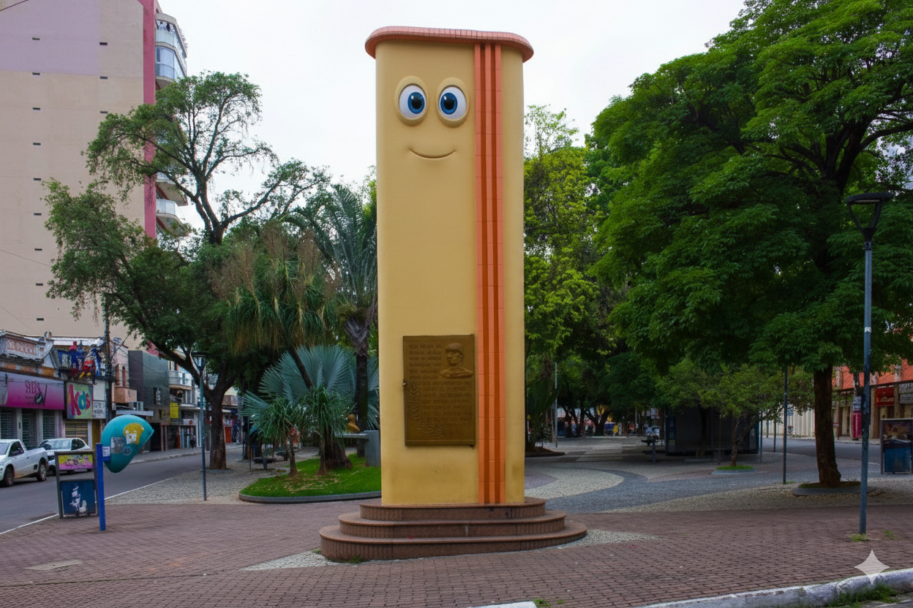

"Não é exagero, é tradição: em Muriaé, a gente não faz apenas turismo, a gente faz amigos"

O Relógio da Praça: O Guardião que não tem pressa
Se as paredes do Centro de Muriaé pudessem falar, e elas falam, viu, principalmente nas rodas de prosa, o Relógio da Praça João Pinheiro seria o maior fofoqueiro de todos. Tombado pelo patrimônio histórico, ele não marca apenas as horas; ele marca gerações. Enquanto você corre para não perder o ônibus, ele está lá, com suas esculturas em bronze, observando a cidade desde os tempos em que ela ainda estava aprendendo a andar.

O gigante que abraça quem chega
"O Sentinela da BR: Dizem por aí que o Cristo é o primeiro a saber quem está chegando na cidade. Se você está no trânsito, estressado com a estrada, é só olhar para cima que lá está ele, mantendo a calma enquanto a vida acontece lá embaixo. Ele se tornou um marco não só da fé, mas da paisagem urbana. É impossível passar pela BR-356 e não dar aquela conferida se o "anfitrião" da cidade está lá, firme e forte.

A Lagoa da Gávea é o verdadeiro refúgio de Muriaé.
"Coração da vida ao ar livre na cidade, ela une o cenário perfeito para aquela caminhada matinal, um piquenique à sombra das árvores ou apenas um dedo de prosa enquanto contempla a natureza. Seja para praticar exercícios ou simplesmente relaxar, é o ponto de encontro que todo visitante precisa conhecer, aquele lugar onde a tranquilidade é a lei e o clima é sempre de bem-estar."

O Horto Florestal é o pulmão de Muriaé e um convite irrecusável à natureza.
"Entre trilhas que revelam a riqueza da nossa Mata Atlântica e o verde que acalma a alma, o espaço ainda abriga o Parque Monteiro Lobato e uma pista de bicicross para quem não dispensa uma dose de aventura. Seja para visitar o viveiro de mudas ou para uma caminhada ecológica em meio à nossa fauna e flora, o Horto é o refúgio ideal para quem busca renovar as energias sem sair do centro da cidade."